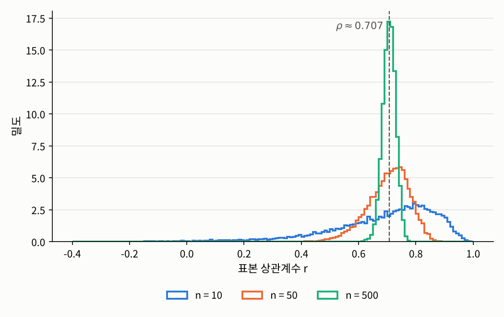
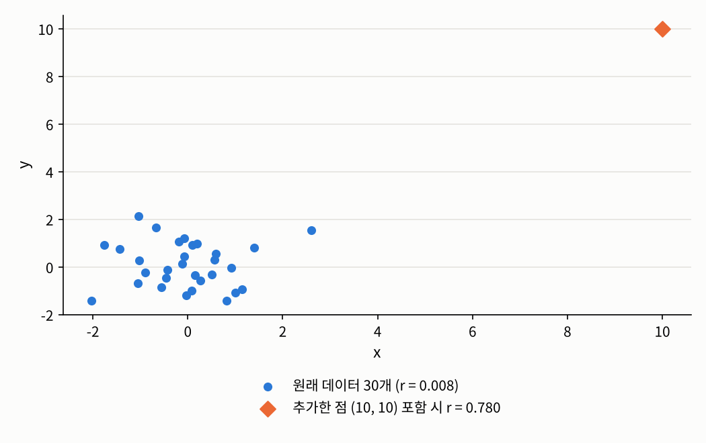

2.1 공분산과 피어슨 상관계수
2장 변수 사이의 의존성 측정 · 직선 관계의 강도를 재는 법
들어가며
데이터 사이언스 개론에서 상관계수를 처음 만났을 때, 그것은 산점도의 점들이 직선 주위에 얼마나 몰려 있는지를 나타내는 데이터의 요약값이었습니다. 이번 글에서는 2장 소개 글에서 예고한 대로 같은 상관계수를 모집단 레벨에서 다시 봅니다. 데이터 뒤에 있는 결합분포에는 어떤 “참된 상관계수”가 딸려 있고, 우리가 데이터로 계산하는 상관계수는 그 값을 추정하는 추정량이라는 관점입니다.
이 관점에서 세 가지를 차례로 살펴보겠습니다. 모집단의 상관계수가 결합분포의 무엇을 재는지, 표본 상관계수가 그 값을 얼마나 잘 맞히는지, 그리고 표본 상관계수가 어떤 상황에서 크게 틀릴 수 있는지입니다.
문제 1: 직선 관계의 강도는 무엇으로 정해지는가
문제 상황
두 변수 사이에 다음과 같은 관계가 있다고 해 봅시다.
\[Y = 2X + \sigma\varepsilon, \qquad X, \varepsilon \overset{\text{i.i.d.}}{\sim} N(0, 1)\]
\(Y\)는 \(X\)의 두 배에 잡음 \(\sigma\varepsilon\)이 더해진 값입니다. 잡음의 크기 \(\sigma\)가 작으면 점들이 직선 \(y = 2x\) 주위에 좁게 모일 것이고, \(\sigma\)가 크면 넓게 퍼질 것입니다. 즉 직선 관계의 “강도”는 데이터를 뽑기 전부터 이 모형에 의해 이미 정해져 있습니다. 그렇다면 그 강도를 모형으로부터 직접 계산할 수 있을까요?
접근 아이디어
개론에서 배운 표본 상관계수는 평균에서 벗어난 정도의 곱을 표본 평균한 공분산을, 각 변수의 흩어진 정도로 나눈 값이었습니다. 데이터 대신 분포를 다룰 때는 표본 평균 자리에 기대값을 쓰면 됩니다. 1장에서 본 것처럼 표본 레벨의 평균은 모집단 레벨의 기대값에 대응하기 때문입니다.
필요한 개념들
공분산은 \(X\)가 평균보다 클 때 \(Y\)도 평균보다 큰 경향이 있으면 양수, 작은 경향이 있으면 음수가 됩니다. 다만 공분산은 단위에 따라 값이 바뀝니다. 키를 센티미터 대신 밀리미터로 재면 공분산이 10배가 되는 식입니다. 상관계수는 이 단위의 영향을 표준편차로 나눠 없앤 것입니다. 실제로 \(a, c > 0\)이면 \(\rho(aX + b, cY + d) = \rho(X, Y)\)가 정의에서 바로 나옵니다.
상관계수가 \(-1\)과 \(1\) 사이에 있다는 것은 개론에서도 보았습니다. 모집단 레벨에서는 등호가 언제 성립하는지까지 정확히 말할 수 있습니다.
증명 속의 식 \(\mathbb{E}[(V - aU)^2] = \mathrm{Var}(Y)(1 - \rho^2)\)에는 상관계수의 의미가 담겨 있습니다. 왼쪽은 \(Y\)를 \(X\)의 일차식 \(aX + b\)로 가장 잘 근사했을 때 남는 오차의 크기입니다. 따라서 \(1 - \rho^2\)는 \(X\)의 일차식으로 설명되지 않고 남는 \(Y\)의 분산의 비율이고, \(\rho^2\)는 일차식으로 설명되는 비율입니다. 상관계수가 “직선 관계의 강도”를 잰다는 말의 정확한 뜻이 바로 이것입니다. 이 해석은 2.4절과 3장에서 회귀의 결정계수 \(R^2\)로 다시 만나게 됩니다.
한편 상관계수가 직선 관계만 잰다는 것은, 상관계수가 \(0\)이어도 두 변수가 강하게 관련될 수 있다는 뜻이기도 합니다.
해결
모형 \(Y = 2X + \sigma\varepsilon\)에서 공분산과 분산을 계산하면, \(X\)와 \(\varepsilon\)이 독립이고 분산이 모두 \(1\)이므로
\[\mathrm{Cov}(X, Y) = 2\,\mathrm{Var}(X) = 2, \qquad \mathrm{Var}(Y) = 4\,\mathrm{Var}(X) + \sigma^2\,\mathrm{Var}(\varepsilon) = 4 + \sigma^2\]
입니다. 따라서 모집단 상관계수는
\[\rho(X, Y) = \frac{2}{\sqrt{1 \cdot (4 + \sigma^2)}} = \frac{2}{\sqrt{4 + \sigma^2}}\]
입니다. 잡음이 없으면(\(\sigma = 0\)) \(\rho = 1\)이고, 잡음이 커질수록 \(0\)에 가까워집니다. 예를 들어 \(\sigma = 0.5, 1, 2, 4\)이면 \(\rho \approx 0.970,\ 0.894,\ 0.707,\ 0.447\)입니다. 앞에서 본 해석으로 읽으면, \(\sigma = 2\)일 때 \(\rho^2 = 0.5\)이므로 \(Y\)의 분산 \(8\) 가운데 절반인 \(4\)가 \(X\)의 일차식으로 설명되고, 나머지 절반은 잡음입니다.
참고 2.1.3의 예도 데이터로 확인해 보겠습니다. 데이터로 계산한 상관계수에는 표본에 따른 오차가 섞이므로, 그 오차가 충분히 작아지도록 표본을 크게 잡았습니다.
import numpy as np
np.random.seed(1557)
X = np.random.normal(size=100_000)
Y = X**2 # Y는 X에 의해 완전히 결정됨
print(f"r(X, X^2) = {np.corrcoef(X, Y)[0, 1]:.4f}")
print(f"r(|X|, X^2) = {np.corrcoef(np.abs(X), Y)[0, 1]:.4f}")r(X, X^2) = 0.0064
r(|X|, X^2) = 0.9362\(Y = X^2\)는 \(X\)의 함수인데도 상관계수는 거의 \(0\)입니다. 반면 같은 \(Y\)를 \(|X|\)와 비교하면 상관계수가 \(0.94\)로 큽니다. \(|X|\)가 커지면 \(X^2\)도 커지는 단조 관계라서 직선에 꽤 가깝기 때문입니다. 관계의 모양이 같아도 어떤 변수와 비교하느냐에 따라 상관계수가 전혀 다르게 나올 수 있다는 뜻입니다.
문제 2: 표본 상관계수는 참값을 얼마나 잘 맞히는가
문제 상황
현실에서는 결합분포를 모르므로 \(\rho\)를 직접 계산할 수 없고, 데이터로 계산한 표본 상관계수를 대신 씁니다. 그렇다면 표본 상관계수는 \(\rho\)를 얼마나 잘 맞힐까요? 표본이 작을 때와 클 때, 잡음이 작을 때와 클 때 어떻게 달라질까요? 그리고 1장의 언어로 말하면, 표본 상관계수는 좋은 추정량일까요?
필요한 개념들
먼저 표본 상관계수를 1장의 표본 레벨과 모집단 레벨의 구분에 맞춰 다시 정의해 두겠습니다.
\(r\)의 식에서는 분자와 분모의 \(\frac{1}{n-1}\)이 약분되어 사라지므로, 표본 공분산과 표본분산을 \(n\)으로 나누든 \(n-1\)로 나누든 \(r\)은 같습니다. 이 사실은 뒤의 정리 2.1.7에서 쓰입니다.
데이터가 많아지면 \(r\)은 정말 \(\rho\)에 다가갈까요? 1.5절의 일치성으로 답할 수 있습니다.
증명의 구조를 기억해 둘 만합니다. 모집단의 양이 기대값들의 연속함수로 쓰이면, 그 기대값들을 표본 평균으로 바꾼 추정량은 자동으로 일치추정량이 됩니다. 이런 추정량을 플러그인 추정량(plug-in estimator)이라고 하는데, 2장에서 다루는 측도들의 표본 버전은 대부분 이런 식으로 만들어집니다.
일치성과 함께, 표본 상관계수는 특정한 모형 아래에서 1장의 최대우도 추정량이기도 합니다. 이를 보이려면 최대우도 추정량의 편리한 성질 하나가 필요합니다.
모수를 어떤 이름으로 부르든 같은 분포를 가리키는 한, “데이터를 가장 그럴듯하게 만드는 분포”는 하나뿐이니 당연한 결과입니다.
해결
모형 \(Y = 2X + \sigma\varepsilon\)에서 잡음의 크기 \(\sigma\)와 표본 크기 \(n\)을 바꿔 가며, 표본을 1만 번씩 새로 뽑아 \(r\)의 평균과 표준편차를 계산해 보겠습니다.
np.random.seed(1557)
reps = 10_000
for sigma in [0.5, 1, 2, 4]:
rho = 2 / np.sqrt(4 + sigma**2) # 모집단 상관계수
line = f"sigma = {sigma:<3}: rho = {rho:.4f} | "
for n in [10, 50, 500]:
X = np.random.normal(size=(reps, n))
Y = 2 * X + sigma * np.random.normal(size=(reps, n))
Xc, Yc = X - X.mean(1, keepdims=True), Y - Y.mean(1, keepdims=True)
r = (Xc * Yc).sum(1) / np.sqrt((Xc**2).sum(1) * (Yc**2).sum(1))
line += f"n={n}: {r.mean():.3f} ± {r.std():.3f} "
print(line)sigma = 0.5: rho = 0.9701 | n=10: 0.966 ± 0.028 n=50: 0.970 ± 0.009 n=500: 0.970 ± 0.003
sigma = 1 : rho = 0.8944 | n=10: 0.881 ± 0.086 n=50: 0.893 ± 0.029 n=500: 0.894 ± 0.009
sigma = 2 : rho = 0.7071 | n=10: 0.687 ± 0.188 n=50: 0.704 ± 0.074 n=500: 0.707 ± 0.023
sigma = 4 : rho = 0.4472 | n=10: 0.430 ± 0.278 n=50: 0.445 ± 0.116 n=500: 0.447 ± 0.036표에서 세 가지를 읽을 수 있습니다.
- 표본이 커질수록 \(r\)의 표준편차가 줄어들고 평균은 \(\rho\)에 다가갑니다. 정리 2.1.5의 일치성입니다. 표준편차는 대략 \(1/\sqrt{n}\) 속도로 줄어드는데, 이는 1.5절의 점근 정규성과 같은 이야기입니다.
- 잡음이 클수록, 즉 \(\rho\)가 \(0\)에 가까울수록 같은 \(n\)에서도 \(r\)이 훨씬 크게 흔들립니다. \(\sigma = 4\), \(n = 10\)이면 표준편차가 \(0.28\)이나 되어, 참값이 \(0.45\)인데도 표본에 따라 \(r\)이 \(0\) 근처나 음수로 나올 수도 있습니다. 반대로 \(|\rho|\)가 \(1\)에 가까우면 \(r\)이 \(1\)을 넘을 수 없으니 흔들림의 폭이 좁아집니다.
- 표본이 작으면 \(r\)의 평균이 \(\rho\)보다 조금 작습니다. 표본 상관계수는 불편추정량이 아니라는 뜻입니다. 다만 이 치우침은 \(n\)이 커지면 사라집니다.
아래 그림은 \(\sigma = 2\)(\(\rho \approx 0.707\))일 때 \(r\)의 분포를 표본 크기별로 그린 것입니다. \(n = 10\)에서는 분포가 왼쪽으로 길게 늘어진 비대칭 모양이고, \(n\)이 커질수록 \(\rho\) 주위로 좁고 대칭에 가까워집니다.

문제 3: 점 하나가 상관계수를 얼마나 바꿀 수 있는가
문제 상황
표본 상관계수는 일치추정량이고 정규분포 아래에서는 최대우도 추정량이기도 하니, 좋은 성질을 두루 갖춘 것처럼 보입니다. 그런데 데이터에 다른 점들과 동떨어진 이상치(outlier)가 하나 섞이면 어떻게 될까요?
해결
서로 독립인 \(x\)와 \(y\)로 점 30개를 만들고, 여기에 점 \((10, 10)\) 하나를 더해 보겠습니다.
np.random.seed(1557)
x = np.random.normal(size=30)
y = np.random.normal(size=30) # x와 독립인 30개의 점
print(f"이상치 없음: r = {np.corrcoef(x, y)[0, 1]:.4f}")
x_out, y_out = np.append(x, 10), np.append(y, 10) # 점 하나를 (10, 10)에 추가
print(f"이상치 추가: r = {np.corrcoef(x_out, y_out)[0, 1]:.4f}")이상치 없음: r = 0.0080
이상치 추가: r = 0.7796
관계가 전혀 없던 데이터가, 점 하나를 더하자 상관계수 \(0.78\)의 강한 양의 관계로 바뀌었습니다. 표본 상관계수는 각 점이 평균에서 떨어진 거리를 그대로 곱해서 더하기 때문에, 평균에서 아주 멀리 떨어진 점 하나가 분자와 분모를 모두 좌지우지하게 됩니다. 그림에서 보듯이 나머지 30개의 점에는 아무런 경향이 없는데도 말입니다.
이것은 이상치가 섞일 가능성이 있는 데이터에서 표본 상관계수를 그대로 믿으면 안 된다는 뜻이고, 동시에 2장 소개 글에서 강조한 대로 숫자는 반드시 그림과 함께 읽어야 한다는 이유이기도 합니다. 정리 2.1.5의 일치성은 \(n \to \infty\)일 때의 이야기일 뿐, 눈앞의 유한한 데이터에서 이상치 하나가 만드는 왜곡을 막아 주지는 못합니다.
정리: 피어슨 상관계수가 재는 것과 재지 못하는 것
이번 글의 내용을 정리하면 다음과 같습니다.
- 모집단 상관계수 \(\rho\)는 결합분포의 직선 관계의 강도를 잽니다. \(\rho^2\)는 \(Y\)의 분산 중 \(X\)의 일차식으로 설명되는 비율이고, \(|\rho| = 1\)은 정확히 직선 관계일 때뿐입니다.
- \(\rho = 0\)은 직선 관계가 없다는 뜻일 뿐, 독립이라는 뜻이 아닙니다.
- 표본 상관계수 \(r\)은 \(\rho\)의 일치추정량이고, 이변량 정규분포 아래에서는 최대우도 추정량입니다. 다만 표본이 작거나 \(\rho\)가 작으면 크게 흔들리고, 작은 표본에서는 조금 치우칩니다.
- \(r\)은 값 자체를 쓰기 때문에 이상치에 매우 민감합니다.
마지막으로, 데이터 사이언스 개론의 상관관계 글에서 강조했듯이 \(|\rho|\)가 크다는 것은 결합분포의 한 가지 특징을 묘사할 뿐, 인과관계의 증거가 아닙니다.
그렇다면 피어슨 상관계수의 두 약점, 즉 직선 관계만 잰다는 점과 값에 끌려가 이상치에 약하다는 점을 함께 해결할 수는 없을까요? 2.2절에서는 값 대신 순위를 비교하는 상관계수를 다룹니다.
연결되는 개념
- \(\leftarrow\) 이전 개념: 2 변수 사이의 의존성 측정
- \(\rightarrow\) 다음 개념: 2.2 순위 상관계수: 스피어만과 켄달
Footnotes
T. W. Anderson, An Introduction to Multivariate Statistical Analysis, 3rd ed., Wiley, 2003, 3.2절.↩︎